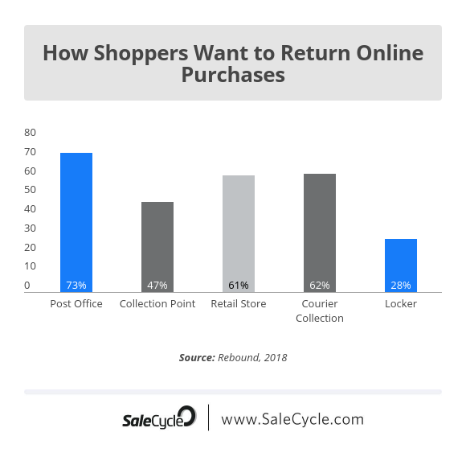

Drawbacks of E-Commerce
- E-Commerce is the process of selling products electronically; through the internet and has many disadvantageous fundamentals of which I will elucidate in the following section.
As the previous case studies explored, formatting website content effectively is the key to maximizing the potential of the website generating money. However, there are many disadvantages that you can’t get around when utilizing E-Commerce within your business or basing your business around E-Commerce.
Drawback #1: Logistics Management
Logistics is the process of taking product(s) from one location and transporting (or delivering) them to another. In the case of a business like “Amazon”, they have a very strong delivery service, where sometimes you can even get your product the same day that you order it. This is quite hard to do and requires complex systems to be implemented; it proves to be non-reliable at times of influx, such as at Christmas or other yearly events.
Delivery may take longer than expected, may cost (more) money than initially thought, or may even be terminated completely. In these cases, the consumer may be disappointed in the service of the store and may request a refund of their product, discount, or some other form of compensation. When the situation escalates to this point, it is common that the business in question loses money.
In the case of a consumer returning their product, this may seem like an easy-enough process, however, it requires more systems to be implemented than what is required to deliver the product initially. The below graph shows how consumers would prefer to return their product. The graph shows how having more medians for consumers to return their product is a good idea, but this becomes extremely cumbersome for the business, in the sense that it costs much more money, proportionally complex, and loses the business money when a product is returned.
Drawback #2: Touchpoints
Touchpoints refer to the consumer being able to physically see, and touch, the product. Much like in real clothes store a consumer would be able to go in and touch products or even try them on. Because the nature of E-Commerce, it is solely based online which means consumers do not have access to this novelty.
This can negatively affect an online business as it creates a stigma around ordering something that you currently cannot see or even touch.
There are various situations where consumers are in the process of buying a product, but they can’t figure out if it would fit them or not. This is a major drawback as a good portion of the users would seek out a physical store to go to instead, to retain the idea of being able to handle the product initially. This idea consolidates the “consideration” phase before the consumer purchases the product, and having that physical element absent can lead to loss of potential, amongst products. This statement goes together with the previous statement about Logistics Management as the consumer would likely return the item if it’s not what they thought it was.
Drawback #3: Online Privacy & Security
Most customers trust that the security of your online store is adequate so much so that when they entrust you with their personal/payment information, this information is not freely given out or stored in an insecure location. Ensuring that the security and privacy sector of any entity can cost a sizeable chunk of the budget as it is the forefront of many online stores and should be, as trust is an inherent requirement in the scenario of online sales.
In addition to this, one attacker may be able to bypass your security/privacy policies and gain unwarranted access to your systems. They then have the potentially to control large portions of your business, destroy it even. All your customers (and business’) data are at risk, and you could face legal action from several entities. The business that was responsible for these outcomes, must be held accountable, so that is why its imperative to keep security and privacy to adequate quality which is determined by the public or law.